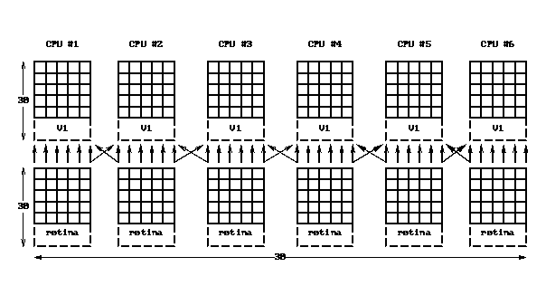

Orient_tut: n-way decomposition
In order to utilize a larger number of processors, we can subdivide each neural population up into a number of slices. Corresponding slices in each population are assigned to the same node, thus reducing the amount of interprocessor communication required.
For example, suppose we have a 60x60 retinal array , a 30x30 horizontally-selective V1 array, and a 30x30 vertically selective V1 array. Assume that we want to split this simulation up over 6 nodes. Then each node would get a 10x60 slice of retinal cells, a 5x30 slice of the horizontally-selective V1, and a 5x30 slice of the vertically-selective V1 array. Since in the Orient_tut model, information flow is strictly one-way from the retinal to V1 cells and each retinal cell projects onto a small region of spatially-corresponding V1 cells, we can illustrate the communication pattern for the retina to each V1 population as follows:

The only inter-node communication required is for the diagonal arrows that crossover between adjacent nodes.
In addition to the nodes dedicated to simulating the network, we employ an additional node for control purposes to generate input to the retina, We also employ another node to gather output directed either to a display or to a file. Thus the total number of nodes needed wil be 2 more than the number of slices. Let us assume that nodes 0 through n_slices-1 will handle the n slices and that node n_slices will handle control, and node n_slices+1 will handle display and output.
The top level PGENESIS script file for this example is partially included here:
// START UPTo run this example on your workstation:
if (display || output)
n_nodes = n_slices + 2
else
n_nodes = n_slices + 1
end
output_node = n_slices + 1
workers = "0"
for (i = 1; i < n_slices; i = i + 1)
workers = workers @ "," @ {i}
end
paron -parallel -silent 0 -nodes {n_nodes} -output o.out \
-executable pgenesis
i_am_control_node = {mynode} == n_slices
i_am_worker_node = {mynode} < n_slices
i_am_output_node = (display || output) && ({mynode} == (n_slices + 1))
i_am_spare_node = !i_am_control_node && !i_am_worker_node && !i_am_output_node
// CREATE ELEMENTS ON EACH NODE
if (i_am_control_node)
setup_control
elif (i_am_worker_node)
slice = {mynode}
create_retinal_slice
create_V1_horiz_slice
create_V1_vert_slice
end
// CONNECT UP ELEMENTS
barrier // wait for all elements to be created
// on every node before trying to
// connect them up
if (i_am_worker_node)
connect_retinal_slice
else
barrier // we need to do 2 barriers here to correspond
barrier // with the 2 barriers that are internal to
// connect_retinal_slice
end
// SET UP NETWORK DISPLAY
if (display)
if (i_am_output_node)
create_display
end
end
// SET UP NETWORK OUTPUT
if (output)
if (i_am_output_node)
create_output
end
end
// SET UP MESSAGES FROM SLICE NODES TO DISPLAY NODE
if (display)
if (i_am_control_node)
setup_control_display
elif (i_am_worker_node)
setup_retinal_slice_display
setup_V1_horiz_slice_display
setup_V1_vert_slice_display
end
end
// SET UP MESSAGES FROM SLICE NODES TO OUTPUT NODE
if (output)
if (i_am_worker_node)
setup_V1_horiz_slice_output
setup_V1_vert_slice_output
end
end
// START SIMULATION
reset // this does an implicit "barrier" so we are guaranteed to
// to have all messages set up before proceeding with
// the simulation
if (i_am_control_node)
if (batch)
echo Simulation started at {getdate}
autosweep horizontal
echo Simulation finished at {getdate}
exit@all
end
// handle user input from the control panel
barrier 8 100000
else
// wait for commands from the control node
barrier 7 100000
end